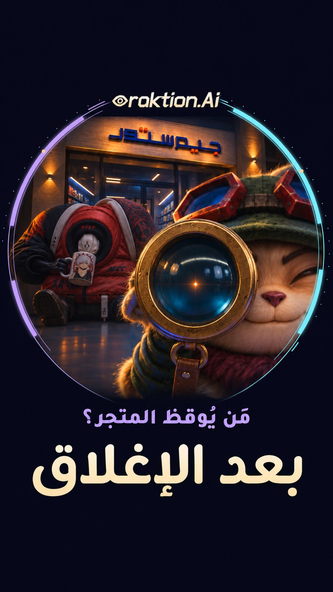
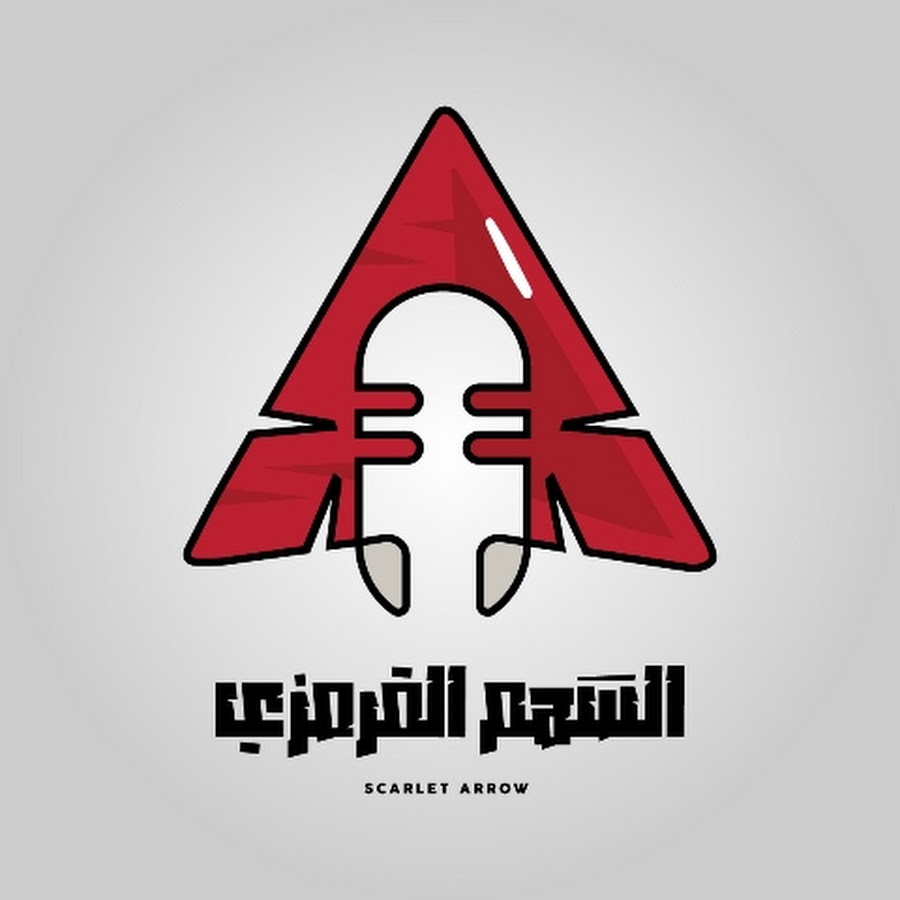

فكرة لها مقصد
نبدأ بالمنتج والجمهور والرسالة؛ ثم نكتب الفكرة والنص ونبني اتجاهها البصري.

إخراج إبداعي · إعلانات سينمائية · عوالم بصرية
من شرارة الفكرة إلى اللقطة الأخيرة: نبتكر الإعلانات والحكايات البصرية، ونُخرجها بالذكاء الاصطناعي بعناية بالتفاصيل، لتمنح علامتك عالمًا يستحق المشاهدة.
01 / أعمال أوراكشن المختارة
إعلانات قصصية، عوالم فانتازيا، وتريلرات سينمائية. افتح أي عمل لتشاهد الفكرة وما وراء تفاصيلها.
02 / من المشاهدة إلى مشروعك
أخبرنا بما تريد أن يراه جمهورك ويشعر به. نصنع الفكرة، ثم نختار لها لغة الصورة والحركة والصوت.
03 / الدقة التي تصنع الفرق
الصورة الجميلة بداية. الإخراج يجمعها في مشهد له مقصد: شخصية واضحة، ضوء يخدم المزاج، حركة مترابطة، وإيقاع يمنح الحكاية نبضها.
نبدأ بالمنتج والجمهور والرسالة؛ ثم نكتب الفكرة والنص ونبني اتجاهها البصري.
نراجع تفاصيل الشخصيات والبيئة والإضاءة، ونختار اللقطات التي تنتمي إلى الحكاية.
المونتاج والمؤثرات والموسيقى والأداء الصوتي تعمل معًا لتوجيه الإحساس.
نكيّف العرض ومقاساته مع منصة النشر، ونربط التنفيذ بهدف المحتوى.
 SALMAN
SALMAN04 / صاحب الفكرة وخلف الكاميرا الافتراضية
مبدع ومخرج إعلانات بالذكاء الاصطناعي، وكاتب يصنع عوالمه قبل أن يُخرجها.
أجمع بين ابتكار الأفكار، الكتابة بالعربية الفصحى، الإخراج والمونتاج، وخبرة في التسويق والحملات وإدارة حسابات التواصل. أوراكشن هي مساحة هذه الرؤية: أن نمنح الفكرة شكلًا، وصوتًا، وحضورًا.
شركة براند للدعاية والإعلان، 2014–2021. تسويق تطبيقَي Tender Square ومناسباتي، مع تسجيل 200 شركة خلال عقد شهر واحد لتطبيق Tender Square. قيادة حملات إعلانية لمرشحين والتنسيق الإعلامي، وإدارة النشر وحسابات التواصل وخطط المحتوى المبنية على دراسة السوق والجمهور وفهم خوارزميات المنصات.
العربية الفصحى بطلاقة. اجتياز المستوى الخامس في بوابة الجامعة الأردنية. دورة Photoshop بتقدير ممتاز، 2024. الثانوية العامة، القسم العلمي، 2008.

05 / الصوت الذي يكمّل المشهد
ممثل صوتي وقائد فريق السهم القرمزي للدوبلاج. أداء بالفصحى، تنوّع في الشخصيات، وخبرة في المكساج والمونتاج. هذه نماذج لصوتي الشخصي.
06 / ما وراء الإعلان
قصص فانتازيا وأعمال مرئية منشورة على أوراكشن، ومحتوى تحليلي بالفصحى على قناة سينباي؛ مساحة تتسع فيها الأفكار أكثر.
لنبدأ بحكايتك أنت
منتج، خدمة، عالم خيالي، أو فكرة لم تجد صورتها بعد. أرسل وصفًا بسيطًا لما تريد تقديمه ولمن؛ ومن هنا تبدأ الحكاية.
+965 6997 5288